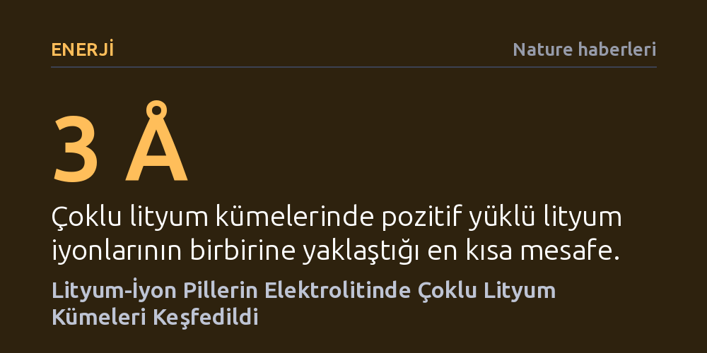

ENERJI · Nature haberleri · 2026-10-15
Yapay zekâ destekli simülasyonlar ve spektroskopi, lityum-iyon pillerdeki lityum iyonlarının sanıldığı gibi tekil değil, etilen karbonatla sarılı çoklu kümeler halinde bulunduğunu kanıtladı. Kolayca indirgenen bu çoklu kümeler, pillerin kararlılığını sağlayan koruyucu arayüz katmanının nasıl oluştuğunu açıklıyor.
Lityum iyonlarının pillerde tek başına dolaştığı kabulünü yıkarak, daha güvenli ve uzun ömürlü bataryaların deneme-yanılmayla değil atomik düzeyde simülasyonlarla tasarlanabileceğini gösteriyor.

Lityum-iyon piller bugün akıllı telefonlardan elektrikli otomobillere kadar temiz enerji dönüşümünün ve modern tüketici elektroniğinin merkezinde yer alıyor. Ancak pillerin şarj ve deşarj döngüleri sırasında katot ile anot arasında mekik dokuyan lityum iyonlarının sıvı elektrolit içinde atomik düzeyde nasıl organize olduğu bugüne kadar tam olarak aydınlatılamamıştı. Kimya literatüründeki onlarca yıllık klasik kabul, pozitif yüklü lityum katyonlarının çözücü molekülleri tarafından tek tek sarılarak birbirinden yalıtılmış halde dolaştığı yönündeydi.
Nature'da yayımlanan kapsamlı bir araştırma, bu temel kabulü kökten değiştiren bir bulgu ortaya koydu. Columbia Üniversitesi ve Schrödinger bünyesindeki araştırmacılar, sıvı elektrolit içinde lityum iyonlarının tekil parçacıklar olarak kalmadığını, birden fazla lityum katyonunun (Li⁺) birbirine 3 ångström gibi son derece yakın mesafelerde toplanarak çoklu kümeler oluşturduğunu tespit etti. Üstelik bu kümeler, araya herhangi bir negatif yüklü anyon girmeksizin, yalnızca etilen karbonat (EC) çözücü moleküllerinin kurduğu özel bir moleküler kafes sayesinde bir arada durabiliyor.
Bu mikroskobik kümelerin şimdiye kadar fark edilememesi bir tesadüf değil; klasik modelleme araçlarının yapısal körlüğünden kaynaklanıyordu. Biyomoleküler araştırmalar için geliştirilen geleneksel moleküler mekanik kuvvet alanları (örneğin OPLS4), pil elektrolitlerinin yoğun ve kutuplu ortamını simüle etmekte yetersiz kalıyor ve çözeltideki lityum iyonlarının neredeyse yüzde 99'unu tekil gösteriyordu. Diğer uçta yer alan ilk ilkeler kuantum mekaniği hesaplamaları (ab initio) ise yüksek doğruluk sunmasına rağmen muazzam bir hesaplama gücü gerektirdiğinden, yalnızca birkaç yüz atomluk ufak sistemleri çok kısıtlı zaman aralıklarında inceleyebiliyordu.
Araştırma ekibi bu tıkanıklığı, kuantum kimyasal hesaplamaların hassasiyetini moleküler dinamiğin hızıyla birleştiren yük-özyinelemeli sinir ağı (QRNN) tabanlı bir makine öğrenimi kuvvet alanıyla aştı. Model yalnızca gaz fazındaki kuantum hesaplamalarıyla eğitilmesine rağmen, yoğun sıvı fazdaki yoğunluk, viskozite ve iyon iletkenliği gibi makroskopik özellikleri laboratuvar ölçümleriyle mükemmel bir uyum içinde tahmin etti. Simülasyonlar, tipik bir bataryadaki 1,2 M derişimde lityum iyonlarının yüzde 40'ının, 2 M derişimde ise yüzde 68'inden fazlasının bu çoklu kümeler biçiminde hareket ettiğini ortaya koydu.
Bilgisayar simülasyonlarının öngördüğü böylesine radikal bir yapının deneysel olarak kanıtlanması gerekiyordu. Fakat oda sıcaklığındaki sıvı elektrolitte moleküller saniyenin milyarda biri hızla yer değiştirdiği için, farklı çözünme çevrelerini doğrudan ayırt etmek mümkün değildi. Araştırmacılar bu engeli aşmak amacıyla elektrolit örneklerini şok dondurma (flash-freezing) yöntemiyle aniden katılaştırarak moleküler hareketleri dondurdu ve katı hal nükleer manyetik rezonans (ssNMR) spektroskopisiyle mercek altına aldı.
Lityum, flor ve hidrojen çekirdekleri arasındaki manyetik etkileşimler incelendiğinde, lityum iyonlarının karşıt anyon olan hekzaflorofosfata (PF₆⁻) doğrudan bağlanmadığı, anyondan tamamen yalıtılmış halde çözücü kafesi içinde kaldığı belirlendi. Karbon-13 rezonanslarında ise tuz konsantrasyonu arttıkça etilen karbonatın karbonil grubunda belirgin bir omuz oluştuğu gözlendi. QRNN simülasyonlarından türetilen teorik spektrumlar ile deneysel ssNMR ölçümlerinin kusursuz örtüşmesi, çoklu lityum kümelerinin bir simülasyon yanılsaması değil, fiziksel bir gerçeklik olduğunu kesinleştirdi.
Bu keşif, pil teknolojisinde yıllardır ampirik bir kural olarak uygulanan ancak teorik temeli eksik kalan kritik bir soruyu da yanıtlıyor: Neden tüm ticari lityum-iyon pillerde etilen karbonat bazlı çözücüler kullanılmak zorunda? Bir pil ilk kez şarj edildiğinde, negatif anot yüzeyinde katı elektrolit arayüzü (SEI) adı verilen koruyucu bir pasivasyon tabakası oluşur. Pilin kendi kendini tüketmeden binlerce döngü boyunca güvenle çalışmasını sağlayan bu tabaka, yaklaşık 0,8 volt gerilimde tetiklenir.
Kuantum kimyasal hesaplamalar, tek bir lityum içeren geleneksel yapıların 0,8 volt düzeyinde kendiliğinden indirgenemeyeceğini gösterdi. Buna karşılık, simülasyonlarda sıkça rastlanan Li₂EC₇ gibi iki lityumlu kümelerin tam da 0,8 volta denk gelen gerilimde son derece kolay biçimde elektron alarak parçalandığı belirlendi. Şarj sırasında artı yüklü bu kümeler eksi kutba çekilerek koruyucu arayüz tabakasının ilk katmanını örüyor. Etilen karbonatın sahip olduğu olağanüstü yüksek dielektrik katsayısı ve kutuplanabilirlik, pozitif iyonların birbirini itmesine rağmen 3 ångström mesafede bir arada kalabilmesini sağlayan mikroskobik kalkanı oluşturuyor.
Bugüne kadar batarya endüstrisi, elektrolit formülasyonlarını ve kimyasal katkı maddelerini büyük ölçüde laboratuvardaki zahmetli deneme-yanılma süreçleriyle geliştiriyordu. Bu çalışma, yapay zekâ destekli kuvvet alanlarının deneysel hiçbir kalibrasyona ihtiyaç duymadan, yalnızca temel fizik ve kuantum mekaniği kurallarından yola çıkarak karmaşık kimyasal sistemleri atomik çözünürlükte eksiksiz modelleyebileceğini ispatladı.
Elde edilen bulgular, lityum-iyon pillerin çalışma prensiplerini yeniden tanımlamakla kalmıyor; yeni nesil silikon ve lityum metal anotlu bataryalar ile sodyum ve magnezyum gibi alternatif iyon sistemlerinin geliştirilmesi için rasyonel bir tasarım zemini sunuyor. Araştırmacılar, bu simülasyon altyapısını anot yüzeyindeki kimyasal tepkimeleri doğrudan modelleyecek şekilde genişleterek daha hızlı şarj olan, yanma riski barındırmayan ve yüksek enerji yoğunluğuna sahip pilleri doğrudan dijital ortamda tasarlamayı hedefliyor.